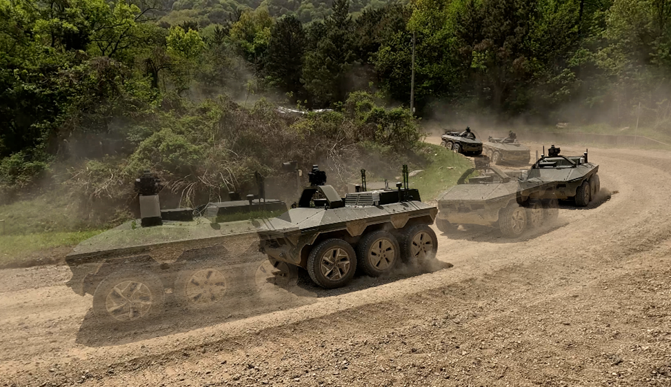
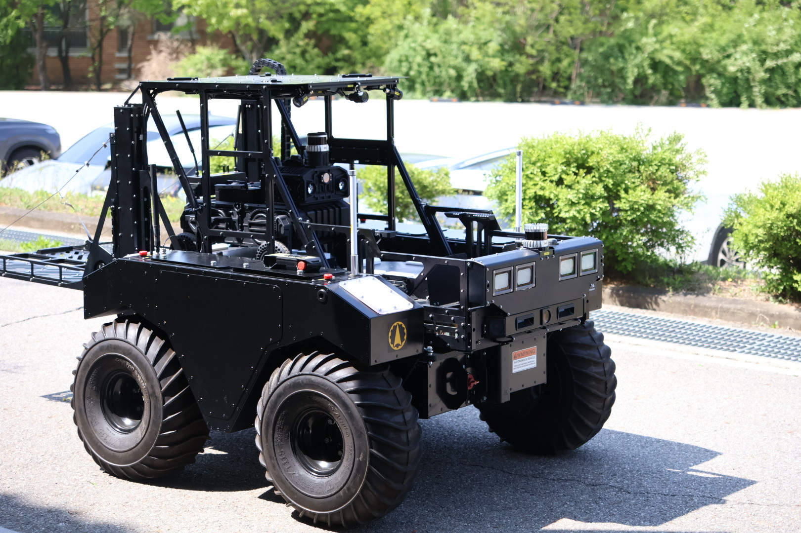
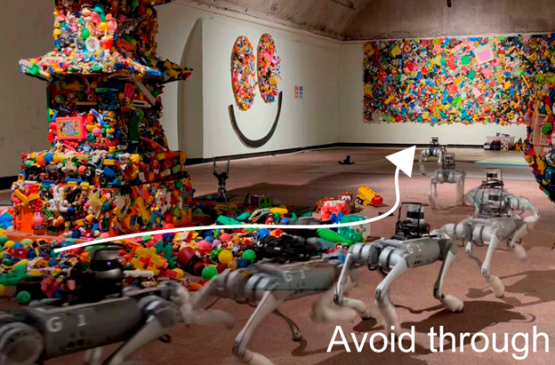
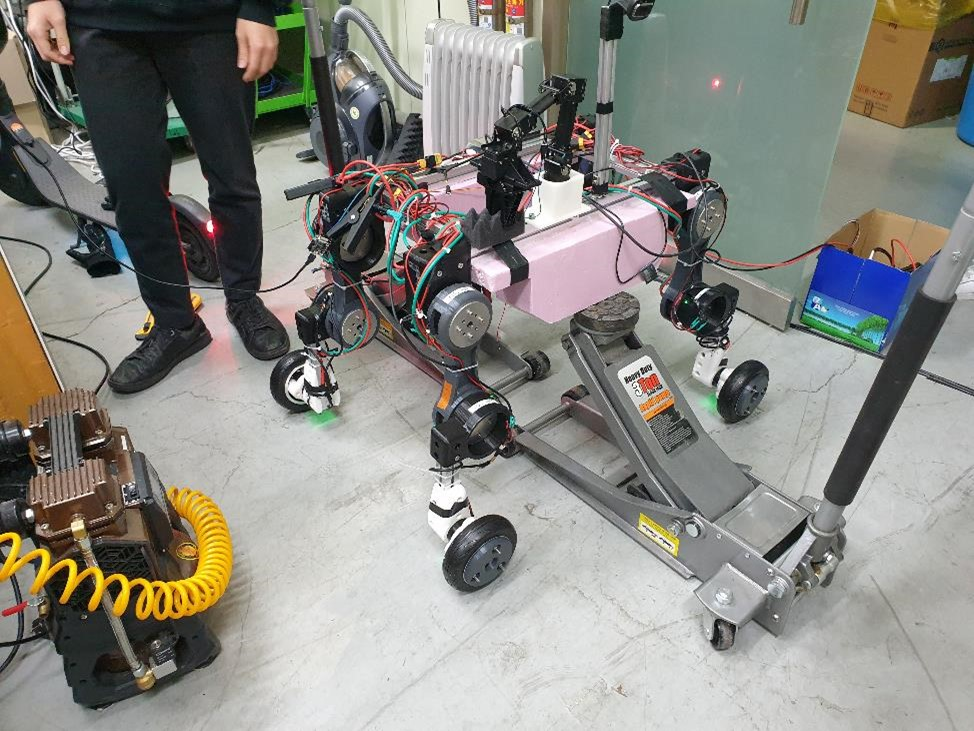
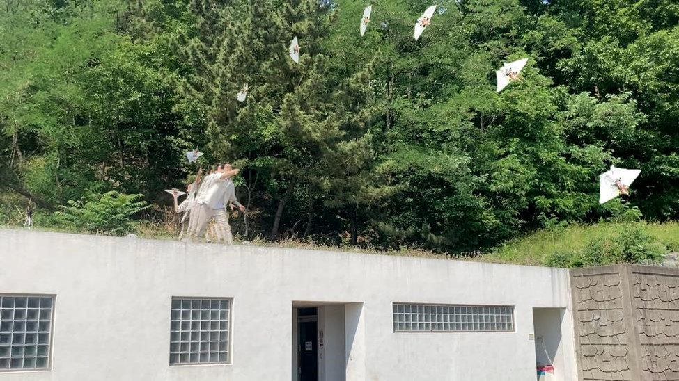
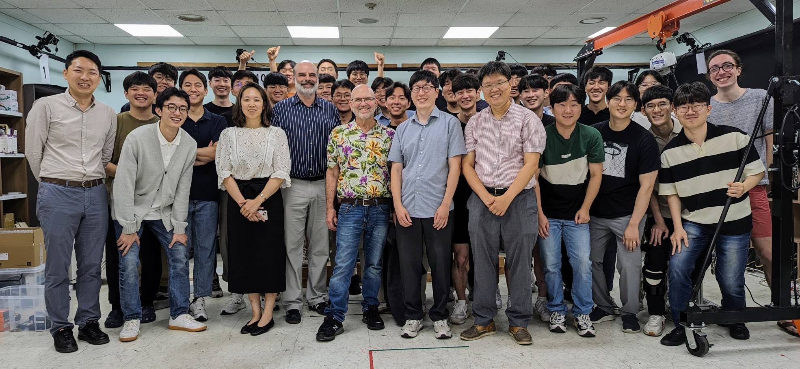
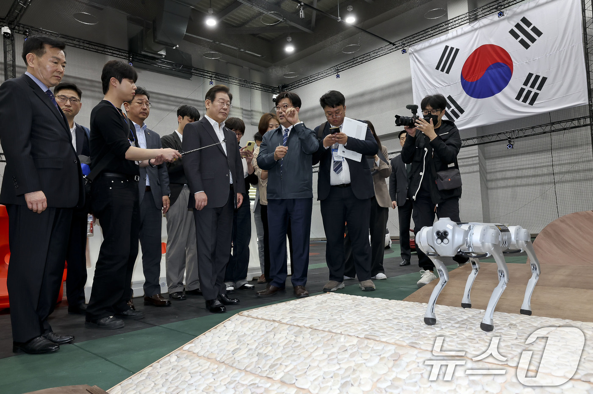

I have built and controlled a wall-climbing robot, a flying-squirrel-inspired drone,
a quadrupedal robot, an off-road self-driving car, and an autonomous tunnel exploration robot.
I am currently seeking a Ph.D. opportunity for Fall 2026 to further pursue research in
Robotics and AI. If you believe my background and interests align with your program or lab,
I would be glad to connect.
I believe that computational modeling of physics as the representational core of intelligence will form
the foundation for building robots with genuine physical understanding.
Most of my research starts from building real robots, simulating them, and then
ends up by controlling them in the wild.
Representative papers are highlighted.
(Equal contributions are denoted by *.)
Developing a general trajectory tracking controller for a flying squirrel drone by learning
wing dynamics and coordinating thrust–wing control for agile maneuvers.
Building and controlling a highly nonlinear flying-squirrel-inspired quadrotor using
reinforcement learning to manage foldable wings and thrust in challenging maneuvers.
01.2022~06.2025
Thrust-limited quadrotor with deployable wings, trained with residual RL.
Skills: Robot design, RL, Learning from Demonstration, Non-linear control Project page ·
Video

Off-road self-drvining (MPPI)
08.2023~08.2024
Off-road traversal of self-driving car for military purpose.
Skills: Model predictive path integral (MPPI). Neural network dynamics. LiDAR perception.

Multi-robot exploration
08.2023~10.2025
Multi-robot exploration with limited communication band.
Skills: ROS2. Lidar-Inertial-Odometry Algorithms. Navigation & Exploration algorithms. Video

Navigation Foundation model
12.2024~Current
Implement LiDAR based navigation foundation model.
Skills: VLM, Large transformer training. Imitation learning. Technical report ·
Video

Development of wheel legged robot
06.2021~12.2021
Develop wheel-legged robot with CAN protocol.
Skills: 3D CAD. 3D printing. Simulating whole-body lagrangian dynamics. Sequential QP based motion planning. Video

Development of glidable drone
02.2022~06.2022
Develop glidable drone with foldabe wings.
Skills: 3D CAD. 3D printing. State estimation. Kalman filter. Video
Dual-unit wall-climbing robot
06.2020~06.2022
Ceiling adhesion robot with laser projector based inspection mission plannig.
Skills: 3D Printing. Physics modelling. STM32 board programming. Project page ·
Video
CAD Design & Arduino development
09.2020~12.2020
Developped 3D printing engine & Arduino with E-CAD
Skills: 3D CAD & Rendering. E-CAD. Video
Cycloidal motor reducer development
09.2020~12.2020
Developped cycloidal motor reducer with ROS2 interface
Skills: 3D CAD & Rendering. ROS2. Video
Media & Press
I’ve had the opportunity to outreach & demonstrate my works to public.
I’ve had the opportunity to demonstrate robots running my controllers in front of leading researchers and government leadership, presenting both the technical contributions and real-world performance.

Controller demonstration: Marc Raibert (Boston Dynamics)
Demonstration of developed hurdle jumping controller. Video

System demonstration: Jae Myung Lee (14th President of South Korea)
Demonstration of designed experimental system with quadruped. Video